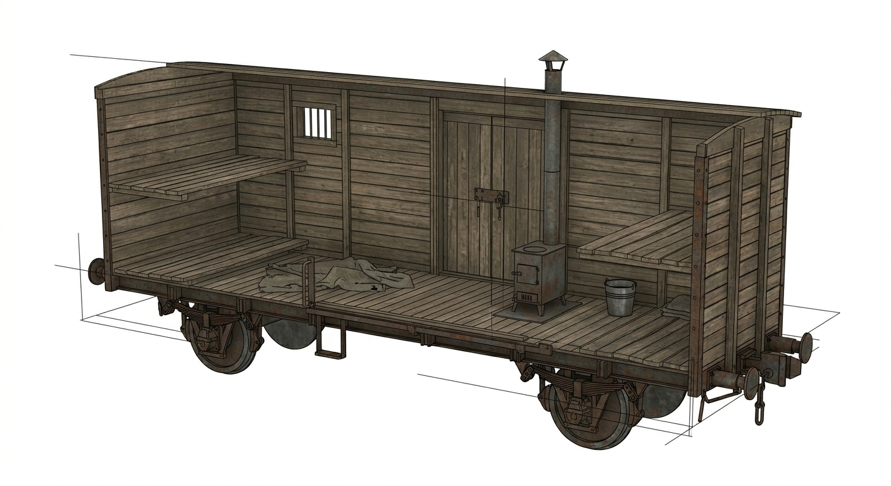

Arhitectura Deportării: Tehnologia Deumanizării
În roman, vagonul nu este doar un mijloc de transport, ci o "arhitectură a durerii". Din punct de vedere tehnologic, aceste vagoane de marfă (teplușki) au fost adaptate pentru a transporta mase mari de oameni în condiții minime de subzistență.
Din punct de vedere artistic, vagonul reprezintă trecerea de la lumină (acasă) la întuneric (gulag), o cutie de lemn care izolează sufletele de restul lumii.

Explicația tehnică a designului: Modelul 3D de mai sus a fost conceput respectând proporțiile reale (aprox. 7 metri lungime pe 2.7 metri lățime). Am ales acest design auster pentru a evidenția contrastul brutal dintre destinația inițială a vagonului (transportul vitelor sau al mărfurilor grele) și utilizarea sa pentru ființe umane.
Se poate observa dispunerea celor două niveluri de scânduri brute (nari) pe care deportații trebuiau să doarmă, lipsa totală a facilităților sanitare adecvate și fereastra minusculă care nu oferea nici suficient oxigen, nici o perspectivă clară asupra drumului. Din punct de vedere istoric, această structură nu era o eroare de design, ci o alegere deliberată a sistemului pentru a frânge rezistența psihologică a prizonierilor înainte ca aceștia să ajungă în Siberia.